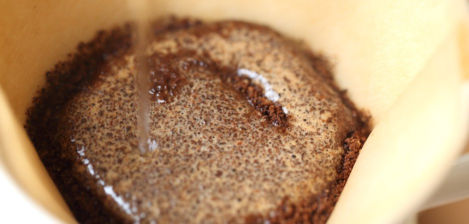
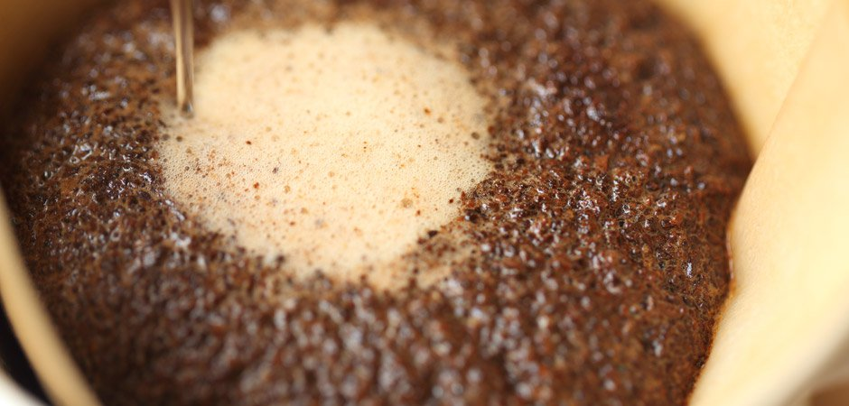

Step 1: BOIL THE KETTLE

Heat the water. Bring your water to around 190 - 200°F preferrably use a
gooseneck kettle
Step 2: GRIND THE BEANS

Grind coffee to a coarseness resembling sea salt.
For blends, I personally recommend using 30 grams of coffee.
Step 3: PLACE AND WET THE FILTER
Fold the crease of the filter paper and place in the coffee dripper.
Add boiling water to wet the filter paper and to get rid of any chemicals
that would still be in the paper. This also heats up the body of the
coffee dripper creating a more persistant thermal mass.
Step 4: ADD THE BEANS
Add the ground coffee to the filter and gently tap it to level the surface of the grounds.
Place the brewer on a carafe or cup, place this entire set-up onto a digital scale, and set it to zero.
Step 5: BLOOM PHASE

There will be four pours total for this coffee preparation.
This is the first, and the most magical, because it is when you will see the coffee “bloom.”
As hot water first hits the grounds, Co2 is released creating a blossoming effect.
Start a timer. Begin pouring water slowly over the coffee,
starting at the outer rim and moving in a steady spiral toward the center of the grounds.
Stop pouring when the scale reaches 60 grams. Make sure all the grounds are saturated,
even if you need to add a little water. The pour should take about 15 seconds.
Give the coffee an additional 30 seconds to drip before moving on to the second pour.
Step 6: POUR N0.1

Starting in the center of the grounds, pour in a steady spiral toward the outer edge
and then back toward the center. Be sure to pour all the way out to the edge over the ripples
in the filter. This helps to keep grounds from being trapped in there and removed from the
rest of the extraction. Add roughly 90 grams, bringing the total to 150 grams.
The goal during this pour is to sink all of the grounds on the surface of the bed.
This creates a gentle turbulence that “stirs” the coffee, allowing water to more evenly extract the grounds.
Allow 45–65 seconds to elapse.
Step 7: POUR N0.2
As the mixture of water and coffee from the second pour drops to the
bottom of the filter, coming close to the level of the grounds,
pour an additional 100 grams of water using the same pattern as the second pour.
This brings the total up to 250 grams and should take 15–20 seconds.
Step 8: POUR N0.3

When the water and coffee from the third pour drops to the bottom of the filter,
complete your fourth and final pour. Add 100 grams,
bringing the total up to 350 grams of water. This pour should take 20 seconds.
The quality of brewed coffee
You will never find a coffee quite like one done with a pourover. Good
Technique and practice can yield amazing results and can truly give the
flavours that the coffee says on the packet. If you are looking for best
cup of coffee possible, this is the one.
The average cost for a Pourover Set
For the level of coffee you can make, a pourover set can be quite cheap
since materials used varies from plastic to metal to ceramic.
Average Cost : £30 - £80
My personal opinion on the French Press
The pourover technique is my favourite by far. The process of brewing
with this method produces good results and rewards skill and patience
which in turn makes it a rewarding experience in general. I own and frequently
use a ceramic Hario V60 and in terms of coffee making, was most definitely
worth the investment. The Pourover might not be for some who want quick
and easy coffee and this is why it is last on the list. This method is
for anyone who appreciates a good coffee and wants barista grade brew
in the comfort of their own home for a far cheaper price if they are
willing to put in the effort to learn the PourOver technique.
An overall rating out of 5